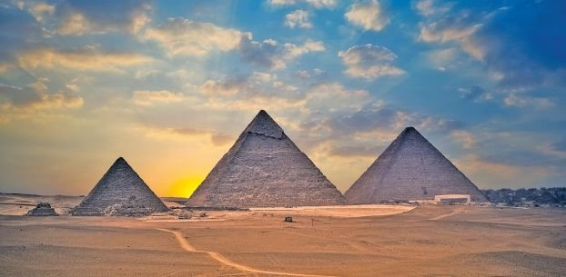
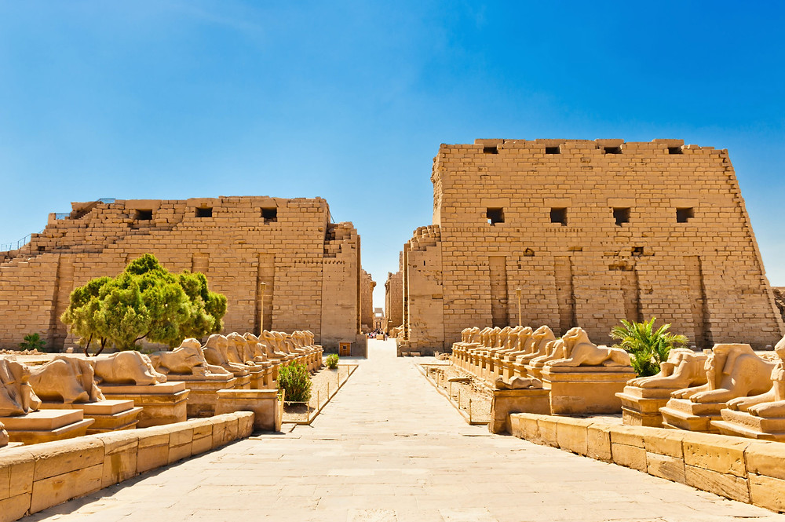
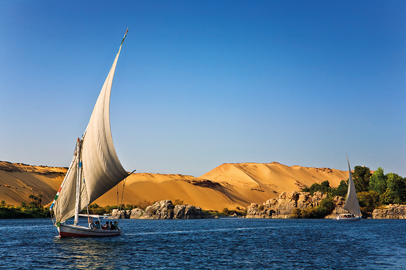
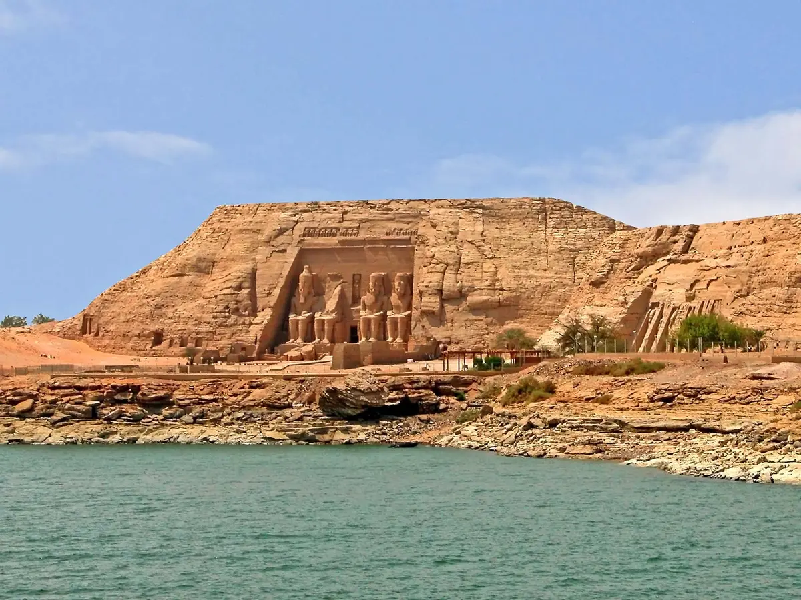
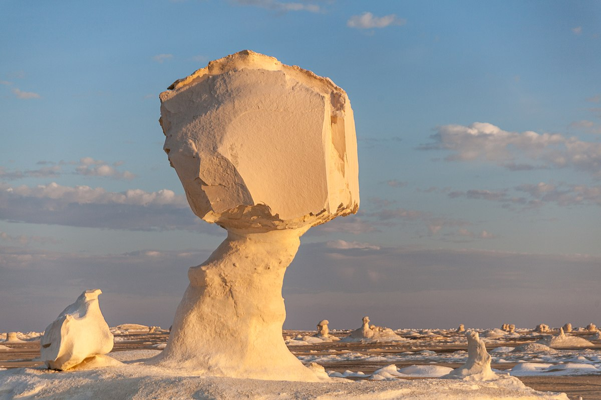

With a fascinating history that reaches back to the dawn of civilization,
Egypt is considered the oldest travel destination on earth. The African nation.s awe-inspiring
temples and pyramids have captured the imagination of travelers for thousands of years.
1. Pyramids of GizaThe last surviving wonder of the Seven Wonders of the |
 | 2. Luxor's Temples & TombsFamed for the Valley of the Kings, Karnak Temple, and the Memorial Temple of Hatshepsut, the Nile-side town of Luxor in Upper Egypt has a glut of tourist attractions. This is ancient Thebes, power base of the New Kingdom pharaohs, and home to more sights than most can see on one visit. Luxor's east bank is home the modern city, with its vibrant souq; the two temples of Karnak and Luxor; and the museum. The west bank's lush farmland and barren cliffs are where the vast majority of Luxor's tourist attractions sit, with so many tomb and temple sights that it has been called the biggest open-air museum in the world. Spend a few days here exploring the colorful wall art of the tombs and gazing in awe at the colossal columns in the temples, and you'll see why Luxor continues to |
 |
3. Cruising the NileEgypt is defined by the Nile. For many visitors, a multi-day cruise upon this famed waterway that saw the rise of the Pharaonic era is a highlight of their Egypt trip. Cruising the Nile is also the most relaxing way to see the temples that stud the banks of the river on the route between Luxor and Aswan, plus sunrise and sunset over the date-palm-studded river banks, backed by sand dunes, is one of Egypt's most tranquil vistas. |
 | 4. Abu SimbelEven in a country festooned with temples, Abu Simbel is something special. |
 |
5. Egyptian MuseumA treasure trove of the Pharaonic world, Cairo's Egyptian Museum is one of the world's great museum collections. The faded pink mansion in downtown Cairo is home to a dazzling amount of exhibits. It's a higgledy-piggledy place, with little labeling on offer and chronological order severely lacking. Instead every corner you turn here is home to some wonderful piece of ancient art or statuary, which would be the highlight of any other museum. The museum's star collection is the haul of golden |
 |
6. White DesertEgypt's kookiest natural wonder is White Desert National Park, |
 |